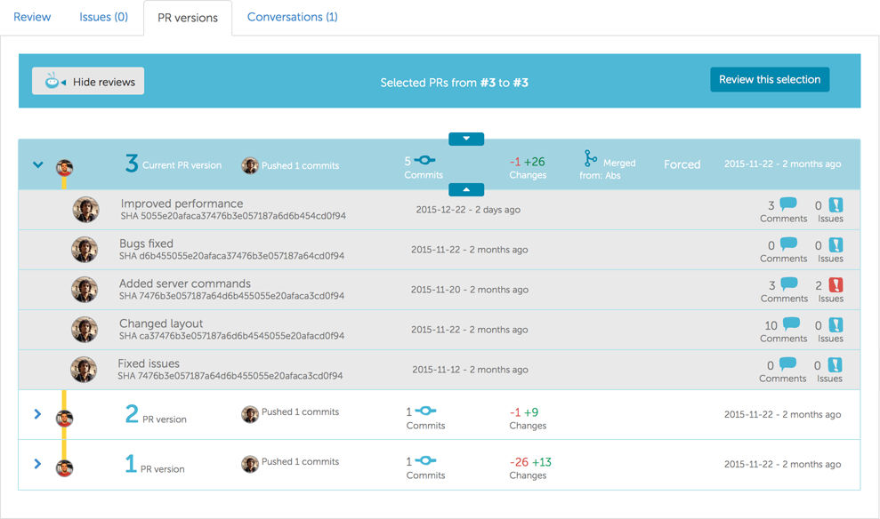
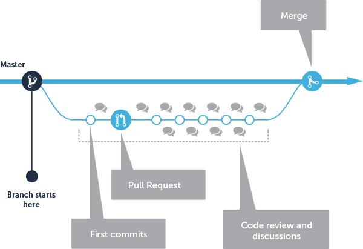
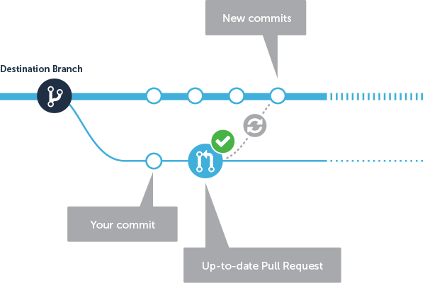
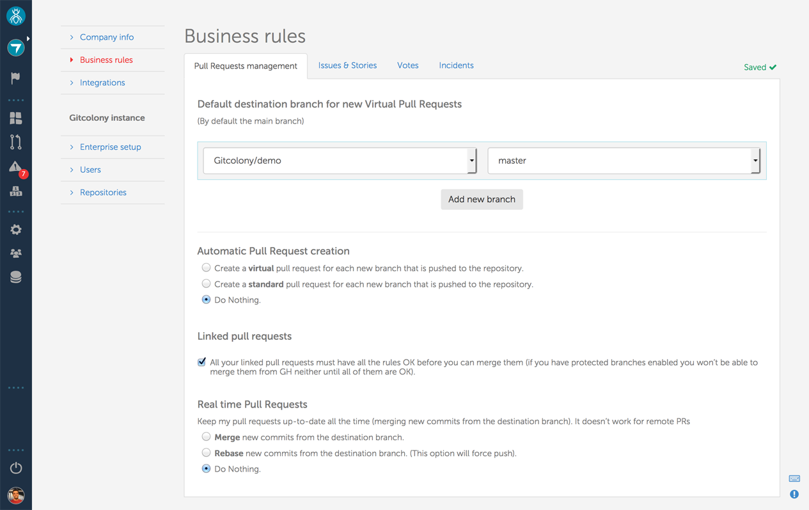
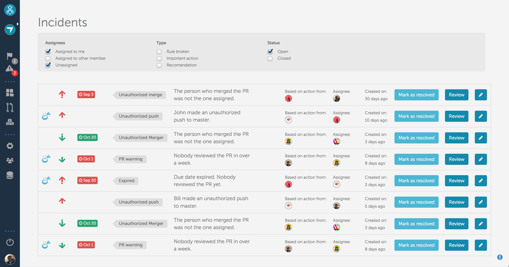
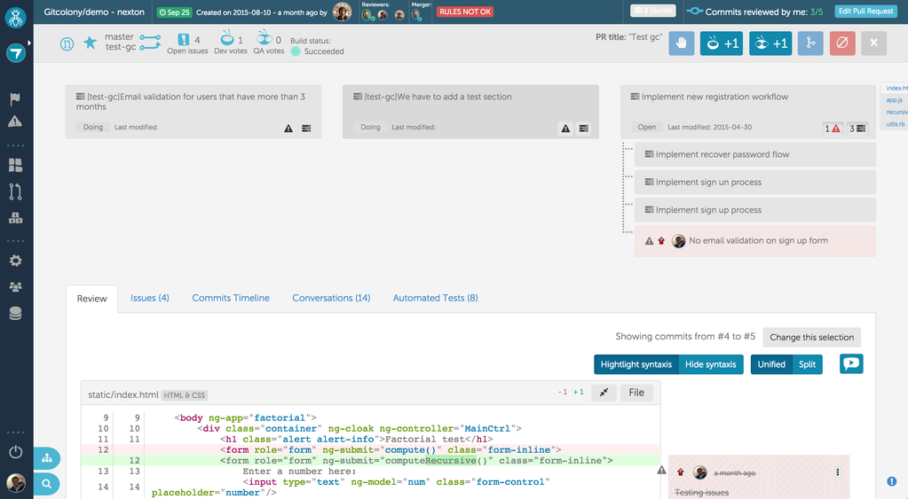
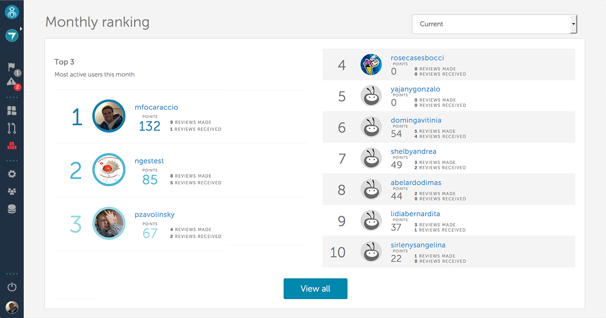

We'd love hearing from you.
Just fill out the form below and tell us what you think.
Make code review process more efficient.
Collaborate with your team in real time, performing progressive checks to avoid titanic reviews before deploying.
You don't have to wait for a standard pull request to review thousands of lines altogether.
Create a Virtual Pull Request and check the code while it's being written, making the review process much more actionable and meaningful.
Gitcolony remembers your last review so you don't have to review things twice. We save partial reviews per user to preserve your team's effort.
Gitcolony supports it, while still giving the chance to partially review your PRs.
The harsh truth about code reviews.
Select multiple reviewers and specify whether their review is optional or mandatory.
You also have the option of appointing the person who will merge the pull request or leave that task available to any member of the team.
Specify a due date so team members get notified when they're running out of time.
As long as the PR is in progress our business rules will not allow anyone to merge it.
Like the good old pull request, but not populated in GitHub, they only exist within the boundaries of Gitcolony.
This makes visible your work so your team can review it from the get go, without the risk of merging it by mistake.
People can vote to merge if they think the pull request is ready.
Once the code is complete, you can transform the virtual pull request into a standard pull request and merge it as you usually do.
If you use multiple repositories for the same project it’s almost impossible to review and keep track of all of them.
Gitcolony automatically links PRs from different repos but with the same origin branch. Once they're all reviewed, and in compliance with your business rules, they can be merged simultaneously.
When reviewing a PR you can easily verify the status of all linked Pull Requests.
See al the files that changed and easily navigate them while you review your code. Moving between files is super easy!
You can search files to give a technical context to the review.
The code review process is now measurable and traceable in our rich timeline.
Enjoy a condensed compilation about your build, commits details, issues, reviewers, etc., it's like gitk on steroids!!!
Have all the information you need at hand to make better data-driven decisions. Now you can tell which branches your commits belong to, the review coverage of those branches, who approved and voted, etc.

With Gitcolony you can manage the whole development cycle: create the pull request, review it and merge it!
The merge interface allows displaying and merging diffs, either two-way or three-way. The left (or center) pane is editable, and the differences with the other pane(s) are shown live as you edit it.

Gitcolony helps you make sure your Pull Requests are always up-to-date with your destination branch.
If you choose to, Gitcolony takes new commits to the destination branch and automatically merges them into your Pull Request.
You can set that, whenever a commit is pushed into a new branch, Gitcolony create a PR "in progress" for the team to immediately start reviewing your work.
Our business rules engine monitors the process and notifies you whenever a pull request enters in conflict.

Gitcolony helps you reinforce the rules your team follows informally.
Gitcolony helps you reinforce your code review policies and best practices your team follows informally.
Your pull request have conflicts that you noticed only when you try to merge them?
Set up the business rules that best suit your team's needs, and have them notified in real time about the things that really matter to them.

Gitcolony proactively helps ensure your project's code quality. Based on a set of rules, we identify and notify you of every incident that needs your attention so you can solve it as soon and as smoothly as possible.
Based on Gitcolony's business rules engine we detect potential issues so your team can tackle them before they actually happen.
Gitcolony helps you to reinforce all your formal and informal policies and best practices. You can define if someone can push directly into your main branch, define code review policies and much more!

Integrate your development and QA processes.
Your QA team can vote to approve or reject pull requests. Your defined business rules ensure that no code is released without QA approval.
Add evidence of the issues you find with a simple drag and drop move.

Your team members get points for delivering high quality code and helping your team.
Have an internal monthly ranking based on performance and encourage your team to surpass their capabilities.
Your team members earn badges based on their commitment to quality.

Gitcolony integrates with the services your team already uses!
Seamlessly pull data and activity from external tools to concentrate up-to-date information about your projects in just one place.
Synchronize commits, pull requests, and activity on GitHub Issues.
Synchronize commits, pull requests, and activity on Bitbucket.
Synchronize commits, pull requests, and activity on GitLab.
Let me know when it's readyMonitor the status of the build of pull requests.
Use customized Gitcolony commands to make your daily job easier by never leaving the terminal.
Synchronize your stories, tasks, issues and your activity on Jira and get it associated with your code.
Integrate your code with your Trello cards and update them based on your development process.
Combine Gitcolony’s alerting capabilities with Slack and keep your team notified and up-to-date as to the status of your project.
Combine Gitcolony’s alerting capabilities with Hipchat and keep your team notified and up-to-date as to the status of your project.
Just fill out the form below and tell us what you think.